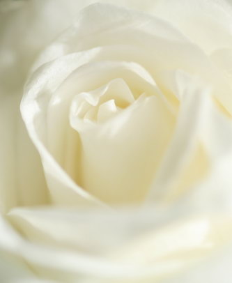

Біла троянда.
Невинність. Мовчання. Таємниця. Молодість. Неземне блаженство.
Відданість. Гідність. Честь. Духовність. Платонічна любов.
У середньовічній християнській Європі біла троянда уособлювала
повагу і смиренність. Діву Марію часто зображували з білою трояндою,
як символом її цнотливості. В Уельсі білі троянди - невинність і спокій -
кладуть у могилу маленької дитини.
Біла троянда прославляє любов, яка не знає спокус плоті. «Квітка
світла», як називають білу троянду, говорить про сталість у коханні, про
любов, яка сильніше ніж смерть, вічної любові.
Біла троянда, оточена аурою чистоти, завжди була королевою і
весільного букета. Вона символізує новий початок. Наречена з букетом з
білих троянд гарантує коханому те, що вона незаймана. Мовою квітів,
біла троянда - «я гідна Вас».
Якщо помисли чисті, як перший сніг, то біла троянда - найкращий
подарунок.
І знову-таки багато значення взяті з міфології і пов'язані з богинею
Афродітою. За однією з версій міфу Афродіта вийшла з піни морської,
що утворилася з крові оскопленного Кроносом Урана. І з'явилася вона
серед квітучих білих троянд. Разом з більш пізніми міфами виникло
протиставлення двох образів Афродіти: «небесної» і «земний». Білі
троянди характеризують Афродіту небесну, дочка Урана, чисту і
непорочну, а червоні троянди - Афродіту земну, дочка Діони і Зевса,
богиню сексуальності та плодючості.
Але біла троянда може бути і «жорстокою». В'яне квітка «скаже»
неприємні речі: «Ви не справили на мене враження!» А букет з не надто
свіжих білих троянд допоможе позбутися від занадто набридливих
шанувальників або шанувальниць.